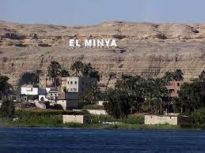

<!DOCTYPE html>
<html lang="en">

<head>
    <meta charset="UTF-8">
    <meta http-equiv="X-UA-Compatible" content="IE=edge">
    <meta name="viewport" content="width=device-width, initial-scale=1.0, maximum-scale=1.0, user-scalable=no" />

    <title>Document</title>
    <link rel="stylesheet" href="https://unpkg.com/leaflet@1.9.2/dist/leaflet.css"
        integrity="sha256-sA+zWATbFveLLNqWO2gtiw3HL/lh1giY/Inf1BJ0z14=" crossorigin="" />
    <script src="https://unpkg.com/leaflet@1.9.2/dist/leaflet.js"
        integrity="sha256-o9N1jGDZrf5tS+Ft4gbIK7mYMipq9lqpVJ91xHSyKhg=" crossorigin=""></script>
    <style>
        #map {
            height: 500px;
        }
    </style>
</head>

<body>
    <div id="map"></div>
    <script>
        var map = L.map('map').setView([30.022863,    31.2378640], 7);
        L.tileLayer('https://tile.openstreetmap.org/{z}/{x}/{y}.png', {
            maxZoom: 19,
            attribution: '&copy; <a href="http://www.openstreetmap.org/copyright">OpenStreetMap</a>'
        }).addTo(map);

        function onMapClick(e) {
            alert("You clicked the map at " + e.latlng);
        }

        function onZoomInMark(e) {
            map.panTo(e.latlng).zoomIn(2);
            map.setView(e.latlng, 11); 
        }
        map.on('click', onMapClick);
        

        L.marker([30.0291525,   31.2320731]).addTo(map).bindPopup("<br> Abu Al-Rish Japanese Hospital").on('click', onZoomInMark);
        
        L.marker([30.0295451,   31.2371218]).addTo(map).bindPopup("<br> Abu El Reesh Hospital in Al Mounira ").on('click', onZoomInMark);
        
        L.marker([30.60955, 31.772461]).addTo(map).bindPopup("<br> Al Sharqia Governorate ").on('click', onZoomInMark);
        
        L.marker([28.381735, 30.959473]).addTo(map).bindPopup("<br> Minya Governorate").on('click', onZoomInMark);
        L.marker([30.024167,    31.2329127]).addTo(map).bindPopup("<br> National Cancer Institute in Cairo").on('click', onZoomInMark);

        L.marker([30.06473, 31.209819]).addTo(map).
        bindPopup(" <br> Magdi Yacoub Hospital in Aswan").on('click', onZoomInMark);


        L.marker([29.9640741,   31.2800189]).addTo(map).bindPopup("<br> Face charity in Maadi").on('click', onZoomInMark);

        L.marker([30.022863,    31.2378640]).addTo(map).bindPopup("<br>Children's Cancer Hospital 57357").on('click', onZoomInMark);

    </script>
</body>

</html>